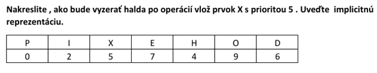

Odpovede na doplňujúce otázky z Algoritmov a Údajových Štruktúr
Doplňujúce otázky a odpovede
1. Ako bude vyzerať BVS po vložení prvku s daným kľúčom?
- Odpoveď:

BVS musí spĺňať nasledujúce vlastnosti:
– pre každý vrchol platí, že všetky kľúče v jeho ľavom podstrome sú menšie
– všetky kľúče v jeho pravom podstrome sú väčšie ako kľúč daného vrcholu
Proces vkladania zahŕňa nasledujúce kroky:
– vyhľadanie pozície pre nový prvok – kľúč vkladaného prvku porovnáva s kľúčmi v navštívených vrcholoch
– ak je vkladaný kľúč rovnaký ako kľúč niektorého vrcholu, prvok sa nevloží
– ak sa kľúč nerovná, vyhľadávanie identifikuje otcovský vrchol, pod ktorý sa nový prvok zaradí
– nový prvok sa vloží ako listový vrchol (teda bez synov) – buď ako ľavý syn identifikovaného otca (ak má nový prvok menší kľúč ako otec), alebo ako pravý syn (ak má nový prvok väčší kľúč ako otec)
2. Zdôvodnite, či je možné efektívne implementovať front ako implicitnú sekvenciu s neobmedzenou kapacitou.
- Odpoveď:
Front nie je možné efektívne implementovať ako implicitnú sekvenciu s neobmedzenou kapacitou. Ak by sme zachovali využitie všeobecnej implicitnej sekvencie, potom by operácia frontu vlož, vyber a vrchol dosiahli lineárne zložitosti (čo nie je prípustné).
Zdôvodnenie (z PDF): Implicitná sekvencia pri vkladaní/mazaní na začiatku vyžaduje posun všetkých ostatných prvkov (O(n)). Pre neobmedzenú kapacitu by pri prekročení alokovanej pamäte bola nutná realokácia a kopírovanie (O(n)). Efektívny front vyžaduje O(1) pre vloženie aj vybratie. (Viď PDF s.57-59, AUS Front, AUS Implicitný front)
3. Zdôvodnite, na ktorých koncoch sekvencie by ste robili operácie vlož a vyber v prípade zásobníka implementovaného implicitnou sekvenciou, aby mal zložitosť O(1).
- Odpoveď:
- Na konci sekvencie.
- Zdôvodnenie (z PDF): Pre implicitnú sekvenciu sú operácie `vložPosledný` a `zrušPosledný` (a `sprístupniPosledný`) typicky O(1) (pokiaľ nedochádza k realokácii pamäte pri vkladaní). Operácie na začiatku (`vložPrvý`, `zrušPrvý`) by boli O(n) kvôli nutnosti posúvať prvky. Zásobník (LIFO) vykonáva všetky operácie na tom istom konci. (Viď PDF s.51-52, AUS Zásobník)
4. Uveďte 2 implementácie prioritného frontu, v ktorých má operácia vyber prvok s danou prioritou zložitosť O(1).
- Odpoveď:
- Utriedený sekvenčný prioritný front (prvok s najvyššou prioritou je na známom konci sekvencie, napr. na začiatku alebo na konci). (PDF s.71)
- Ľavostranná halda (operácia `vrchol` je O(1), `vyber` je O(log N), takže toto nie je presne O(1) pre *vyber*. Ak otázka myslela len prístup k prvku s najvyššou prioritou, tak halda vyhovuje pre `vrchol`. Pre samotné *vybratie* je to O(log N)). Ak však ide o špeciálny prípad utriedeného poľa, kde vyberáme z konca, tak O(1).
Ak sa "vyber prvok s danou prioritou" interpretuje ako "vyber prvok s najvyššou prioritou", tak pre utriedený sekvenčný PF je to O(1). Pre ľavostrannú haldu je vyber O(log N). Ak otázka znamená prístup k prvku, tak pre haldu je vrchol O(1). Pre túto otázku sa držím "utriedený sekvenčný PF". Druhá možnosť pre O(1) vyber by mohla byť špecializovaná štruktúra, ktorá explicitne drží referenciu na prvok s najvyššou prioritou, ale PDF spomína hlavne tieto.
Podľa materiálov z prednášky 8, slide 49 (AUT Prioritný front, Operácia Vyber), pre Zásobník a Front je to O(1). Ak sa "danou prioritou" myslí implicitná priorita (LIFO/FIFO), potom:
- Zásobník (vyber posledný vložený)
- Front (vyber prvý vložený)
- Utriedený sekvenčný prioritný front (implicitný alebo explicitný, prvok je na začiatku/konci).
- Ak by sme mali prioritný front implementovaný ako pole, kde index priamo zodpovedá priorite a v bunke je napr. zoznam prvkov s tou prioritou (ak sú priority diskrétne a v malom rozsahu), tak by to mohlo byť O(1) + čas na spracovanie zoznamu. Toto ale PDF priamo nerieši ako základnú implementáciu. Pre štandardné implementácie z PDF je to hlavne utriedený sekvenčný PF.
5. Uveďte 2 implementácie prioritného frontu, v ktorých má operácia vlož prvok s danou prioritou zložitosť O(1).
- Odpoveď:
- Neutriedený implicitný sekvenčný prioritný front (vkladá sa na koniec poľa). (PDF s.70)
- Neutriedený explicitný sekvenčný prioritný front (vkladá sa na začiatok alebo koniec zreťazenej sekvencie). (PDF s.70)
- Dvojzoznam – vloženie do dlhej (neutriedenej) sekvencie dvojzoznamu (ak sa vkladá do dlhej časti, je to O(1)). (PDF s.75)
6. Uveďte aspoň 3 spôsoby riešenia kolízií v tabuľke s rozptýlenými záznamami.
- Odpoveď:
- Zreťazovanie (Chaining) (PDF s.162)
- Otvorená adresácia (Open Addressing) - napr. lineárne sondovanie, kvadratické sondovanie, dvojité hešovanie (PDF s.171)
- Využitie preplňovacej oblasti (Overflow Area) (PDF s.167)
- Opätovné hešovanie (Rehashing - ako technika riešenia, nie ako zväčšovanie tabuľky) (PDF s.169)
7. Napíšte mapovaciu funkciu pre kompaktné dvojrozmerné pole s prístupnými indexmi [0..4][0..3], ktorého prvky sa mapujú na pamäťové bloky v kolexikografickom poradí.
- Odpoveď:
Kolexikografické poradie (ukladanie po stĺpcoch) Počet riadkov (Nriadky alebo N1) = 4 - 0 + 1 = 5 Počet stĺpcov (Nstlpce alebo N2) = 3 - 0 + 1 = 4 Mapovacia funkcia pre indexy [i][j] (i-riadok, j-stĺpec), bázy b1=0, b2=0: map(i, j) = (j - b2) * N1 + (i - b1) map(i, j) = j * 5 + i Príklady: Prvok [0][0]: map(0, 0) = 0 * 5 + 0 = 0 Prvok [1][0]: map(1, 0) = 0 * 5 + 1 = 1 Prvok [4][0]: map(4, 0) = 0 * 5 + 4 = 4 (koniec prvého stĺpca) Prvok [0][1]: map(0, 1) = 1 * 5 + 0 = 5 (začiatok druhého stĺpca) Prvok [4][3]: map(4, 3) = 3 * 5 + 4 = 15 + 4 = 19 (posledný prvok)
(Zdroj: PDF s.13, Mapovanie po stĺpcoch)
8. Napíšte mapovaciu funkciu pre kompaktné dvojrozmerné pole s prístupnými indexmi [0..2][0..3], ktorého prvky sa mapujú na pamäťové bloky v kolexikografickom poradí.
- Odpoveď:
Kolexikografické poradie (ukladanie po stĺpcoch) Počet riadkov (Nriadky alebo N1) = 2 - 0 + 1 = 3 Počet stĺpcov (Nstlpce alebo N2) = 3 - 0 + 1 = 4 Mapovacia funkcia pre indexy [i][j] (i-riadok, j-stĺpec), bázy b1=0, b2=0: map(i, j) = (j - b2) * N1 + (i - b1) map(i, j) = j * 3 + i
(Zdroj: PDF s.13, Mapovanie po stĺpcoch)
9. Ako utriedi triediaca sieť vstup?
- Odpoveď:

Triediaca sieť sa skladá z liniek (po ktorých "tečú" dáta/prvky, ktoré sa majú utriediť) a komparátorov. Každý komparátor zoberie dva prvky z dvoch vstupných liniek, porovná ich a na svoje dve výstupné linky ich umiestni v usporiadanom poradí (napr. menší prvok na hornú linku, väčší na dolnú). Postupným prechodom dát cez sériu komparátorov sa celý vstupný súbor prvkov usporiada. Triediaca sieť je navrhnutá tak, že pre akúkoľvek permutáciu vstupných dát budú dáta na výstupe vždy usporiadané. (PDF s.224)
10. Na ktorý koniec implicitného frontu sa vkladá, aby vkladanie bolo efektívne?
- Odpoveď:
Pre implicitný front s obmedzenou kapacitou (implementovaný ako cyklické pole/CIS) sa vkladanie realizuje na jeden koniec (napr. index `indexVlozenia`) a vyberanie z druhého konca (napr. index `indexVyberu`). Obe operácie (`vloz` aj `vyber`) majú potom zložitosť O(1). Dôležité je, že sa indexy posúvajú cyklicky. (PDF s.61)
11. V akých dvoch fázach pracuje triedenie (vonkajšie)?
- Odpoveď:
Vonkajšie triedenie (triedenie sekvenčných súborov, ktoré sa nezmestia do operačnej pamäte) typicky pracuje v dvoch fázach (napr. triedenie spájaním monotónií):
1. Vytvorenie monotónií (runs): V tejto fáze sa postupne načítavajú časti súboru do pamäte, utriedia sa vnútorným triediacim algoritmom a zapíšu sa späť na disk ako utriedené sekvencie (monotónie). (PDF s.217)
2. Spájanie monotónií (merging): Vytvorené utriedené monotónie sa postupne spájajú do čoraz väčších utriedených sekvencií, až kým nevznikne jeden finálny, úplne utriedený súbor. (PDF s.217, 221)
12. Napíš dve tabuľky, ktorých operácia vlož má zložitosť O(n).
- Odpoveď:
1. Utriedená sekvenčná tabuľka (implementovaná implicitnou alebo explicitnou sekvenciou): Pri vkladaní treba nájsť správne miesto (O(log n) pre implicitnú s polením intervalov, O(n) pre explicitnú) a potom posunúť prvky (O(n) pre implicitnú) alebo vložiť prvok (O(1) pre explicitnú po nájdení miesta). Celková zložitosť pre vloženie do utriedenej implicitnej sekvencie je O(n) kvôli posúvaniu. Pre utriedenú explicitnú je to O(n) kvôli vyhľadaniu miesta. (PDF s.113)
2. Binárny vyhľadávací strom (BVS) v najhoršom prípade (degenerovaný na zoznam): Vkladanie vyžaduje prechod od koreňa, čo môže byť O(n). (PDF s.203)Poznámka: Neutriedená sekvenčná tabuľka má vloženie O(1) (ak sa vkladá na koniec a nekontroluje sa unikátnosť kľúča). Ak by sa kontrolovala unikátnosť kľúča, tak aj v neutriedenej by to bolo O(n) kvôli prehľadávaniu.
13. Rozpíš, či je možné efektívne implementovať prioritný front s využitím implicitnej sekvencie s obmedzeným množstvom prvkov.
- Odpoveď:
Áno, je to možné. Najznámejšou a efektívnou implementáciou prioritného frontu pomocou implicitnej sekvencie s obmedzeným počtom prvkov je halda (heap). V prípade binárnej haldy majú operácie `vlož` prvok a `vyber` prvok (s najvyššou prioritou) časovú zložitosť O(log n), kde n je počet prvkov v halde. Toto sa považuje za efektívnu implementáciu. (PDF s.84)
14. Uveďte výhody a nevýhody opakovaného hešovania.
- Odpoveď:
Opakované hešovanie (rehashing) ako metóda riešenia kolízií (použitie viacerých hešovacích funkcií H1, H2, ..., Hm):
Výhody:
– Relatívne jednoduchá implementácia (ak sú hešovacie funkcie dobre navrhnuté). (PDF s.170)
– Môže pomôcť lepšie rozptýliť synonymá oproti jednoduchému lineárnemu/kvadratickému sondovaniu, ak sú funkcie dobre zvolené.
Nevýhody:
– Časová zložitosť operácií (vlož, skúsNájsť, obsahuje, vyber) rastie, pretože v najhoršom prípade treba vyskúšať všetky hešovacie funkcie. Ak je M funkcií, môže to byť až M-krát pomalšie. (PDF s.170)
– Vyžaduje viac pamäte, ak každá hešovacia funkcia mapuje do vlastného disjunktného priestoru v rámci implicitnej sekvencie. (PDF s.170)
– Maximálny počet synoným pre daný "slot" (vypočítaný prvou funkciou) je obmedzený počtom alternatívnych hešovacích funkcií (M-1). (PDF s.170)
15. Uveďte, na ktorých koncoch obojstrannej explicitnej sekvencii majú operácie vlož a vyber zložitosť O(1).
- Odpoveď:
Na obidvoch koncoch (začiatok aj koniec) majú operácie `vlož` (`vlozPrvy`, `vlozPosledny`) aj `vyber` (`zrusPrvy`, `zrusPosledny`) zložitosť O(1), za predpokladu, že obojstranne zreťazená sekvencia udržiava priame referencie na prvý aj posledný prvok. (PDF s.52, tabuľka)
16. Nakreslite, ako bude vyzerať halda po operácii vyber prvok s maximálnou prioritou. Uveďte implicitnú reprezentáciu.
- Odpoveď:
Implicitná reprezentácia (finálna): Index: 0 1 2 3 4 Dáta: G F P O N Priorita: 4 5 6 7 8
17. Nakreslite, ako bude vyzerať halda po operácii vlož prvok X s prioritou 3. Uveďte implicitnú reprezentáciu.
- Odpoveď:

18. Nakreslite, ako bude vyzerať halda vpravo po operácii vlož prvok X s prioritou 5. Uveďte implicitnú reprezentáciu.
- Odpoveď:

19. Čo sú synonymá?
- Odpoveď:
Keď hešovacia funkcia H(kľúč) priradí dvom rôznym kľúčom rovnaký index (teda rovnaký výsledok hešovacej funkcie), tieto kľúče sa označujú ako synonymá. Táto situácia, kedy hešovacia funkcia vyprodukuje rovnaký index pre rôzne kľúče, sa nazýva kolízia. Synonymá sú teda kľúče, ktoré spôsobujú kolíziu. Ak K je množina kľúčov, potom pod kolíziou rozumieme dvojicu rôznych kľúčov k1 a k2 z množiny K, pre ktoré vráti H rovnaký výsledok. (PDF s.158)
20. Čo je multištruktúra?
- Odpoveď:
Multištruktúra je dátová štruktúra, ktorá je interne zložená z viacerých iných (jednoduchších) dátových štruktúr. Tieto vnútorné štruktúry spolupracujú, aby poskytli funkcionalitu komplexnejšej multištruktúry. (PDF s.48, s.75)
Príkladom je dvojzoznam, ktorý sa skladá z dvoch sekvencií:
– Krátka sekvencia (často implicitná sekvencia s pevnou kapacitou) na uchovávanie prvkov s najvyššou prioritou (utriedená).
– Dlhá sekvencia (často jednostranne zreťazená sekvencia) na uchovávanie ostatných prvkov (neutriedená).
Tieto dve štruktúry (sekvencie) spolu tvoria funkčnosť dvojzoznamu. (PDF s.75)
21. Uveďte výhody a nevýhody riešenia kolízií zreťazovaním s využitím atribútu synonymum v prípade tabuľky s rozptýlenými záznamami.
- Odpoveď:
Zreťazovanie s využitím atribútu (smerníka) `synonymum` v bloku pamäte pre prvok tabuľky:
Výhody:
– Neobmedzený počet prvkov, ktoré môžu byť synonymami (obmedzené len celkovou pamäťou). (PDF s.164)
– Relatívne jednoduché algoritmy pre vkladanie (na začiatok reťazca synoným) a vyhľadávanie (prechod reťazcom). (PDF s.164)
– Malé dodatočné pamäťové nároky na jeden prvok (len jeden smerník navyše). (PDF s.164)
Nevýhody:
– V najhoršom prípade (všetky prvky sú synonymá alebo sa mapujú na malý počet indexov) môže tabuľka degenerovať na zreťazený zoznam (alebo viacero dlhých zoznamov), a operácie ako vyhľadávanie môžu mať zložitosť O(n). (PDF s.164)
22. Vysvetlite, na čo slúži hešovacia funkcia v tabuľke s rozptýlenými záznamami.
- Odpoveď:
Hešovacia funkcia H(kľúč) v tabuľke s rozptýlenými záznamami slúži na prevod (mapovanie) kľúča prvku na celočíselný index do implicitnej sekvencie (poľa), kde sú prvky (alebo referencie na prvky/reťazce synoným) tabuľky uložené. Cieľom je umožniť rýchly (ideálne O(1)) prístup k prvkom tabuľky, podobne ako sa pristupuje k prvkom poľa pomocou indexu. (PDF s.158)
Efektívna hešovacia funkcia by mala:
– Byť rýchla na výpočet.
– Rovnomerne rozmiestňovať (rozptyľovať) prvky v sekvencii, aby sa minimalizoval počet kolízií.
– Minimalizovať kolízie (situácie, kedy rôzne kľúče produkujú rovnaký hešovaný index).
23. Napíšte pseudokód operácie nájdi blok s daným kľúčom v utriedenej sekvenčnej tabuľke. Hlavička tejto operácie môže mať tvar napr.:
- Odpoveď:
operácia UtriedenáSTab.nájdiBlokSKľúčom(kľúč: K): ↑TypBloku { definuj premennú blokSKľúčom: ↑TypBlokuSekvencie ⇐ NULL // Predpokladáme, že skúsNájsťBlokSKľúčom používa polenie intervalov Keď platí (skúsNájsťBlokSKľúčom(kľúč, 0, veľkosť() - 1, // upravený poslednýIndex pre polenie blokSKľúčom)) // skúsNájsťBlokSKľúčom vráti true, ak nájde presnú zhodu tak vráť blokSKľúčom inak vráť NULL // Ak presná zhoda neexistuje }
24. Napíšte pseudokód operácie vlož v sekvenčnej tabuľke, orientácia v BVS. Hlavička tejto operácie môže mať tvar napr.:
- Odpoveď:
operácia UtriedenáSTab.vlož(kľúč: K, dáta: T) { definuj premennú dátaTabuľky: ↑PrvokTabuľky Ak (jePrázdny()) potom { dátaTabuľky ⇐ dajAdresu(pamäťováŠtruktúra→vložPrvý()→dáta) } inak { definuj premennú blokSKľúčom: ↑TypBlokuSekvencie ⇐ NULL // skúsNájsťBlokSKľúčom vráti false, ak kľúč neexistuje, // ale nastaví blokSKľúčom na pozíciu, kam by sa mal vložiť, // alebo na blok s rovnakým kľúčom Ak (skúsNájsťBlokSKľúčom(kľúč, 0, veľkosť() - 1, blokSKľúčom)) potom { // Upravený poslednýIndex // Ak skúsNájsťBlokSKľúčom vráti true, kľúč už existuje CHYBA: Tabuľka už obsahuje prvok s daným kľúčom. } inač { // Kľúč neexistuje, blokSKľúčom ukazuje na miesto vloženia // Ak blokSKľúčom je NULL (napr. prázdna sekvencia alebo špeciálny prípad po skúsNájsť), // toto by malo byť ošetrené v skúsNájsť alebo tu. // Pre jednoduchosť predpokladáme, že blokSKľúčom je vždy platný pre porovnanie alebo je NULL, ak sa má vložiť na začiatok/koniec prázdnej. // V tomto kontexte, ak skúsNájsťBlokSKľúčom vráti false, // blokSKľúčom by mal ukazovať na prvok, pred alebo za ktorý sa má vložiť. // Pseudokód z prednášky (slide 112 pre BVS) je komplexnejší, tu je zjednodušenie pre sekv. tab. // Tento pseudokód je založený na existujúcom kóde a nemusí presne zodpovedať PDF pre BVS // Tu by mal byť kód pre nájdenie pozície a vloženie do utriedenej sekvencie (napr. posun prvkov pre IS) // Alebo vloženie do ES (jednoduchšie). // Pôvodný pseudokód z otázky bol pre UtriedenáSTab // Ak blokSKľúčom je NULL (po neúspešnom hľadaní v prázdnej tabuľke, čo je už ošetrené vyššie) // alebo ak je kľúč menší ako prvý prvok (vkladanie na začiatok) // alebo ak je kľúč väčší ako posledný prvok (vkladanie na koniec) // Zjednodušená logika pre explicitnú sekvenciu, kde blokSKľúčom je miesto vloženia: // Predpoklad: pamäťová štruktúra je napr. explicitná sekvencia // Tento pseudokód je inšpirovaný, ale nie presne z PDF o BVS Ak (blokSKľúčom = NULL alebo kľúč < blokSKľúčom→dáta→kľúč) potom dátaTabuľky ⇐ dajAdresu(pamäťováŠtruktúra→vložPred(blokSKľúčom↓)→dáta) inak // kľúč > blokSKľúčom→dáta→kľúč dátaTabuľky ⇐ dajAdresu(pamäťováŠtruktúra→vložZa(blokSKľúčom↓)→dáta) } } dátaTabuľky→kľúč ⇐ kľúč dátaTabuľky→dáta ⇐ dáta // Tu by sa mal ešte inkrementovať počet prvkov }Poznámka: Hlavička "orientácia v BVS" je pre sekvenčnú tabuľku mätúca. Pseudokód je upravený pre sekvenčnú tabuľku.
25. Napíšte pseudokód operácie nájdi vrchol s daným kľúčom v binárnom vyhľadávacom strome. Hlavička tejto operácie môže mať tvar napr.:
- Odpoveď:
operácia VšeobecnýBinárnyVyhľadávacíStromVýznam: Pokúsi sa vyhľadať vrchol s daným kľúčom. Vráti `true` ak nájde, `false` inak. Parameter `vrchol` na konci obsahuje referenciu na nájdený vrchol, alebo na posledný navštívený vrchol pred neúspešným hľadaním (užitočné pre vkladanie).
(Zdroj: PDF s.194, upravený pseudokód.)
26. Napíšte pseudokód operácie nájdi blok s daným kľúčom v utriedenej sekvenčnej tabuľke. Hlavička tejto operácie môže mať tvar napr.:
- Odpoveď:
operácia UtriedenáSTab.skúsNájsťBlokSKľúčom( kľúč: K, prvýIndex: int, poslednýIndex: int, poslednýBlok: ↑↑TypBlokuSekvencie // Výstupný parameter ): bool { Ak (jePrázdny() alebo prvýIndex > poslednýIndex) potom { poslednýBlok ⇐ NULL Vráť nepravda } definuj premennú indexStredu: int Pokiaľ (prvýIndex <= poslednýIndex) opakuj { // Zmenené na <= pre korektné polenie indexStredu ⇐ prvýIndex + (poslednýIndex - prvýIndex) / 2 poslednýBlok ⇐ pamäťováŠtruktúra→sprístupni(indexStredu) Ak (poslednýBlok→dáta→kľúč = kľúč) potom { Vráť pravda // Kľúč nájdený } Ak (poslednýBlok→dáta→kľúč < kľúč) potom { prvýIndex ⇐ indexStredu + 1 } inak { // poslednýBlok→dáta→kľúč > kľúč poslednýIndex ⇐ indexStredu - 1 } } // Ak kľúč nebol nájdený, poslednýBlok ukazuje na posledný porovnávaný prvok // alebo na pozíciu, kde by sa mal prvok nachádzať. // Pre presné určenie "kam skončil algoritmus" by sa mal poslednýBlok nastaviť // aj pred ukončením s nepravda. V tomto prípade, po neúspešnom cykle, // poslednýBlok ukazuje na posledný blok, ku ktorému sa pristupovalo cez indexStredu. // Ak chceme, aby ukazoval na miesto vloženia: // Ak sa cyklus skončí, prvýIndex > poslednýIndex. // Miesto vloženia je typicky prvýIndex. // Ak prvýIndex je mimo rozsah, treba ošetriť (napr. vkladanie na koniec). // Pre jednoduchosť sa držíme pôvodného významu, že poslednýBlok je nastavený v cykle. // Ak chceme aby poslednýBlok ukazoval na pozíciu vloženia, po cykle by sme mohli dať: // poslednýBlok <= pamäťováŠtruktúra→sprístupni(prvýIndex) (s kontrolou hraníc) Vráť nepravda // Kľúč nebol nájdený }Význam: Pomocou polenia intervalov sa pokúsi vyhľadať blok pamäte sekvencie s daným kľúčom. Vráti `true` ak nájde, `false` inak. Parameter `poslednýBlok` na konci obsahuje referenciu na blok pamäte, kde algoritmus skončil (nájdený prvok, alebo prvok blízko miesta, kde by mal byť hľadaný kľúč).
27. Nakreslite, ako bude vyzerať binárny vyhľadávací strom vpravo po jednoduchej rotácii vrchola B okolo vrcholu A.
- Odpoveď:
28. Nakreslite, ako bude vyzerať binárny vyhľadávací strom vpravo po jednoduchej ľavej rotácii vrchola E okolo vrcholu C.
- Odpoveď:
Štruktúra pred operáciou (alebo relevantný ASCII art):
A B E D C
29. Nakreslite, ako bude vyzerať binárny vyhľadávací strom po jednoduchej ľavej rotácii vrchola C okolo vrcholu A.
- Odpoveď:
30. Utrieďte sekvenciu vzostupne pomocou bublinkovým triedením. Uveďte poradie prvkov sekvencie po prvom a po druhom vsunutí prvku. → bubble sort
- Odpoveď:
Sekvencia: 7, 3, 6, 2, 4, 1
Stav po 1. úplnom prechode (najväčší prvok "vybublal" na koniec):[3, 6, 2, 4, 1, 7]
Stav po 2. úplnom prechode (druhý najväčší prvok "vybublal" na svoje miesto):[3, 2, 4, 1, 6, 7]
31. Utrieďte sekvenciu vzostupne pomocou triedenia priamym vkladaním. Uveďte poradie prvkov sekvencie po prvom a po druhom vsunutí prvku.
- Odpoveď:
Sekvencia: 5, 8, 2, 9, 1, 4
Počiatočný stav (prvok 5 je utriedená časť):[5 | 8, 2, 9, 1, 4]
Po 1. vsunutí (vkladáme 8, ostáva na mieste):[5, 8 | 2, 9, 1, 4]
Po 2. vsunutí (vkladáme 2):[2, 5, 8 | 9, 1, 4]
32. Utrieďte sekvenciu vzostupne pomocou triedenia priamym vkladaním. Uveďte poradie prvkov sekvencie po prvom a po druhom vsunutí prvku. → insert sort
- Odpoveď:
Sekvencia: 7, 3, 6, 2, 4, 1
Počiatočný stav (prvok 7 je utriedená časť):[7 | 3, 6, 2, 4, 1]
Po 1. vsunutí (vkladáme 3):[3, 7 | 6, 2, 4, 1]
Po 2. vsunutí (vkladáme 6):[3, 6, 7 | 2, 4, 1]
33. Utrieďte sekvenciu vzostupne pomocou triedenia priamym výberom. Uveďte poradie prvkov sekvencie po prvom a po druhom výbere prvku. → select sort
- Odpoveď:
Sekvencia: 7, 2, 8, 5, 3
Počiatočný stav:[7, 2, 8, 5, 3]
Po 1. výbere (nájdeme minimum 2, vymeníme s 7):[2 | 7, 8, 5, 3]
Po 2. výbere (nájdeme minimum v [7,8,5,3] čo je 3, vymeníme s 7):[2, 3 | 8, 5, 7]
34. Uveďte, koľko komparátorov je v triedacej sieti.
- Odpoveď:
Podľa obrázka je tam: 6 komparátorov a 4 linky.
(PDF s.224, tento konkrétny obrázok ukazuje 6 komparátorov)
35. Uveďte, aká je hĺbka triediacej siete na obrázku vpravo.
- Odpoveď:
Hĺbka tejto konkrétnej triediacej siete je 6. (PDF s.225 definuje hĺbku)
Ak sa myslí obrázok siete so 4 vstupmi z PDF (slide 225):

Hĺbka tejto siete je 3.
36. Zoraďte nasledujúce implementácie prioritného frontu podľa zložitosti operácie vlož prvok s danou prioritou: neusporiadaný sekvenčný PF, dvojzoznam, halda, usporiadaný sekvenčný PF.
- Odpoveď:
- Neusporiadaný sekvenčný PF (O(1)) (PDF s.74)
- Halda (O(log n)) (PDF s.90)
- Dvojzoznam (O(√n) alebo O(m), kde m je veľkosť krátkej sekvencie, typicky √n) (PDF s.79)
- Usporiadaný sekvenčný PF (O(n)) (PDF s.74)
37. Zoraďte nasledujúce implementácie prioritného frontu podľa zložitosti operácie vyber prvok s najvyššou prioritou: neusporiadaný sekvenčný PF, dvojzoznam, halda, usporiadaný sekvenčný PF.
- Odpoveď:
- Usporiadaný sekvenčný PF (O(1)) (PDF s.74)
- Halda (O(log n)) (PDF s.90)
- Dvojzoznam (O(1) ak je krátka sekvencia neprázdna, inak O(n) pre reštrukturalizáciu; amortizovane O(√n) alebo O(m)) (PDF s.83)
- Neusporiadaný sekvenčný PF (O(n)) (PDF s.74)
Nové otázky (od 38)
38. Kde sa realizujú operácie `vlož` a `vyber` v prípade frontu implementovaného jednostranne zreťazenou sekvenciou, aby boli efektívne (O(1))?
- Odpoveď:
Pre efektívny front (FIFO) implementovaný jednostranne zreťazenou sekvenciou (JZS):
- Operácia `vlož` (enqueue) sa realizuje na konci sekvencie (ako operácia `vlozPosledny` JZS). Táto operácia má zložitosť O(1), ak JZS udržiava explicitnú referenciu na svoj posledný prvok.
- Operácia `vyber` (dequeue) sa realizuje na začiatku sekvencie (ako operácia `zrusPrvy` JZS). Táto operácia má vždy zložitosť O(1) pre JZS.
Zdôvodnenie (z PDF): PDF s.63 (AUS Explicitný front) uvádza: "V prípade implementácie pomocou jednostranne zreťazenej sekvencie (s referenciou na posledný prvok) je operácia vlož realizovaná operáciou sekvencie vložPosledný a operácie vyber a vrchol operáciami sekvencie zrušPrvý a sprístupniPrvý." Toto zabezpečuje O(1) zložitosť pre všetky základné operácie frontu.
39. Aký je informačný vektor pre dvojrozmerné pole A[0..1][0..2]?
- Odpoveď:
Dané pole má rozmery: prvý index (riadky) `i` z `[0..1]`, druhý index (stĺpce) `j` z `[0..2]`. Bázy: b1 = 0, b2 = 0. Počty prvkov v dimenziách: N1 = 1 - 0 + 1 = 2, N2 = 2 - 0 + 1 = 3.
Pre mapovanie po riadkoch:
v1 = N2 = 3
v2 = 1 (prázdny súčin pre poslednú dimenziu)
Informačný vektor Vriadky = (3, 1).Pre mapovanie po stĺpcoch (kolexikografické poradie):
v1 = 1 (prázdny súčin pre prvú dimenziu)
v2 = N1 = 2
Informačný vektor Vstĺpce = (1, 2).Zdôvodnenie (z PDF): PDF s.21 (Informačný vektor) definuje výpočet komponentov informačného vektora pre mapovanie po riadkoch (vj = ΠKl=j+1 Nl) a po stĺpcoch (vj = Πj-1l=1 Nl).
40. Nakreslite, ako bude vyzerať halda po operácii vlož prvok X s prioritou 3. Uveďte implicitnú reprezentáciu.
- Odpoveď:
(Toto je zhodné s otázkou č. 17)
Poznámka: Implicitná reprezentácia by mala byť uvedená k tomuto obrázku. Ak obrázok `halda-priorita3.png` nezobrazuje finálny stav s implicitnou reprezentáciou, treba ho doplniť.
41. Napíšte pseudokód operácie `nájdi kľúč` v utriedenej sekvenčnej tabuľke.
- Odpoveď:
(Použijeme pseudokód pre `skúsNájsťBlokSKľúčom` z otázky č. 26, ktorý využíva polenie intervalov, čo je typické pre utriedenú sekvenčnú tabuľku.)
operácia UtriedenáSTab.skúsNájsťBlokSKľúčom( kľúč: K, prvýIndex: int, poslednýIndex: int, poslednýBlok: ↑↑TypBlokuSekvencie // Výstupný parameter ): bool { Ak (jePrázdny() alebo prvýIndex > poslednýIndex) potom { poslednýBlok ⇐ NULL Vráť nepravda } definuj premennú indexStredu: int Pokiaľ (prvýIndex <= poslednýIndex) opakuj { indexStredu ⇐ prvýIndex + (poslednýIndex - prvýIndex) / 2 poslednýBlok ⇐ pamäťováŠtruktúra→sprístupni(indexStredu) Ak (poslednýBlok→dáta→kľúč = kľúč) potom { Vráť pravda // Kľúč nájdený } Ak (poslednýBlok→dáta→kľúč < kľúč) potom { prvýIndex ⇐ indexStredu + 1 } inak { // poslednýBlok→dáta→kľúč > kľúč poslednýIndex ⇐ indexStredu - 1 } } // Kľúč nebol nájdený. `poslednýBlok` je nastavený na posledný prvok, // s ktorým sa porovnávalo (alebo na prvok, kde by mal byť, ak by sa mal vkladať). // Aby sme presne splnili "kam skončil algoritmus", ponechávame poslednýBlok tak, ako bol naposledy nastavený. Vráť nepravda }Zdôvodnenie (z PDF): Vyhľadávanie v utriedenej sekvenčnej tabuľke (implementovanej ako implicitná sekvencia) sa efektívne robí polením intervalov (binárne vyhľadávanie). (PDF s.108-109, s.111)
42. Uveďte výhody a nevýhody otvoreného adresovania v hash tabuľke.
- Odpoveď:
Otvorené adresovanie je technika riešenia kolízií v hešovacích tabuľkách, kde sa všetky prvky ukladajú priamo do hlavného poľa tabuľky.
Výhody:
- Jednoduchá implementácia (základné formy): Lineárne sondovanie je veľmi jednoduché na implementáciu.
- Úspora pamäte: Nevyžaduje dodatočné smerníky ani oddelené štruktúry pre synonymá (ako pri zreťazovaní), takže môže byť pamäťovo efektívnejšie, najmä ak je málo kolízií.
- Dobrá lokalita referencií: Všetky dáta sú v jednom súvislom bloku pamäte, čo môže byť výhodné pre cache procesora.
Nevýhody:
- Zhlukovanie (Clustering): Prvky majú tendenciu tvoriť zhluky.
- Primárne zhlukovanie: Dlhé sekvencie obsadených pozícií (typické pre lineárne sondovanie).
- Sekundárne zhlukovanie: Rôzne kľúče, ktoré hešujú na rovnaký index, sledujú rovnakú sondovaciu sekvenciu (problém napr. kvadratického sondovania).
- Výkon závisí od faktora zaplnenia: S rastúcim zaplnením tabuľky sa výkon operácií (vlož, nájdi, vyber) výrazne zhoršuje.
- Komplikovaná operácia `vyber` (zruš): Jednoduché odstránenie prvku môže prerušiť sondovaciu sekvenciu pre iné prvky, ktoré boli vložené neskôr a prešli cez túto pozíciu. Vyžaduje použitie špeciálnych značiek pre zmazané pozície (tzv. "tombstones" alebo "deleted flags"), čo komplikuje logiku a môže viesť k tomu, že tabuľka sa nikdy úplne "nevyprázdni" bez reorganizácie.
- Obmedzená kapacita: Maximálny počet prvkov je pevne daný veľkosťou poľa. Pri zaplnení je nutné tabuľku zväčšiť a všetky prvky znova prehešovať (rehash), čo je náročná operácia.
Zdôvodnenie (z PDF): PDF s.171-172 (AUS tabuľka s rozptýlenými záznamami – riešenie kolízií otvorenou adresáciou).
43. Nakreslite rotáciu vpravo v BVS.
- Odpoveď:
(Toto je pravá rotácia vrcholu A, kde B je jeho ľavý syn a stáva sa novým koreňom podstromu. Ekvivalentné obrázku z otázky 27).
Alternatívne, všeobecnejší obrázok znázorňujúci pravú rotáciu (y okolo x):

Zdôvodnenie (z PDF): PDF s.201 (AUS binárny vyhľadávací strom – rotácie) popisuje a ilustruje rotácie.
44. Aká je hĺbka triediacej siete? (Uveďte definíciu a príklad)
- Odpoveď:
Definícia: Hĺbka triediacej siete formalizuje "koľko najviac komparátorov musí prebehnúť od vstupu po výstup". Definuje sa nasledovne:
- Vstupná linka (ktorá nepochádza z komparátora) má hĺbku 0.
- Výstupná linka komparátora, ktorého vstupné linky L1 a L2 majú hĺbky h(L1) a h(L2), má hĺbku max(h(L1), h(L2)) + 1.
- Hĺbka celej triediacej siete je maximálna hĺbka ktorejkoľvek výstupnej linky v sieti.
Výkon (časová zložitosť) triediacej siete je potom O(h), kde h je jej hĺbka.
Príklad:
Hĺbka tejto siete je 3.
Zdôvodnenie (z PDF): PDF s.225 (Výkon triediacej siete).
45. Uveďte poradie prvkov sekvencie [7, 3, 6, 2, 4, 1] po prvom a po druhom úplnom prechode (cykle) bublinkového triedenia.
- Odpoveď:
Sekvencia:
[7, 3, 6, 2, 4, 1]Po 1. úplnom prechode:
(7,3) → [3,7,6,2,4,1]
(7,6) → [3,6,7,2,4,1]
(7,2) → [3,6,2,7,4,1]
(7,4) → [3,6,2,4,7,1]
(7,1) → [3,6,2,4,1,7]
Výsledok po 1. prechode:[3, 6, 2, 4, 1, 7](prvok 7 je na svojom finálnom mieste)Po 2. úplnom prechode (triedi sa časť pred 7):
Pracujeme so sekvenciou[3, 6, 2, 4, 1], prvok 7 už ignorujeme.
(3,6) → [3,6,2,4,1,7] (žiadna zmena)
(6,2) → [3,2,6,4,1,7]
(6,4) → [3,2,4,6,1,7]
(6,1) → [3,2,4,1,6,7]
Výsledok po 2. prechode:[3, 2, 4, 1, 6, 7](prvok 6 je na svojom finálnom mieste)Zdôvodnenie (z PDF): PDF s.123-124 (Bublinkové triedenie – Bubble sort).